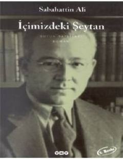

İŞİnsanın kendi içindeki karanlıkla ve toplumsal baskılarla mücadelesini anlatan unutulmaz bir klasik.
Sabahattin Ali’nin bu ünlü romanı, bireyin iç dünyasındaki çatışmaları, zayıflıkları ve toplumsal baskılarla mücadelesini ele alır. Ömer ve Macide'nin karmaşık ilişkisi etrafında şekillenen eser, insan psikolojisinin derinliklerine ışık tutar. Yazar, karakterlerin iç sesleri aracılığıyla dönemin aydınlarının ruh halini ve toplumsal hypocrisynin eleştirisini yapar.